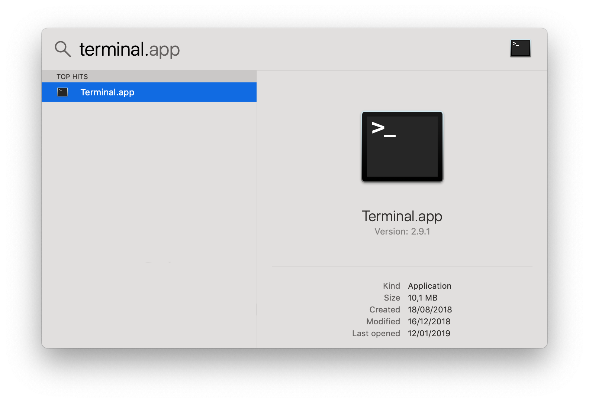
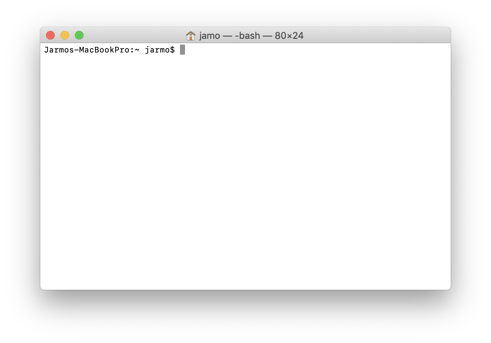
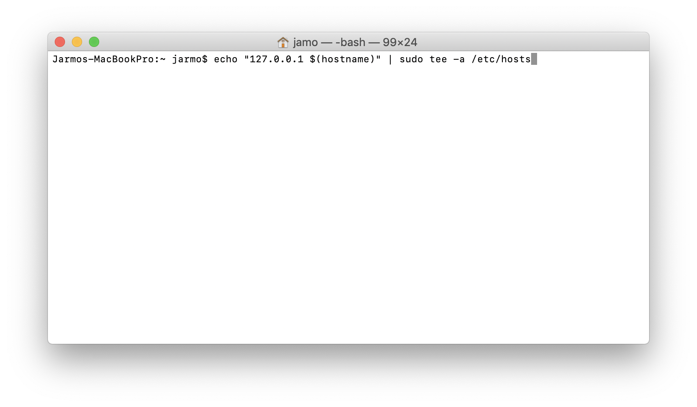
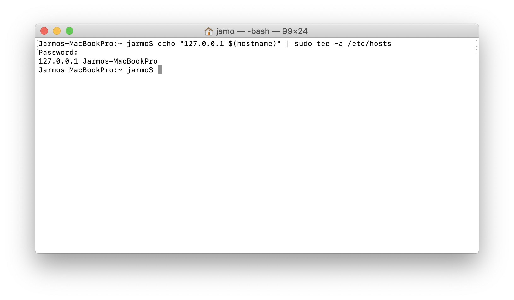

Uusimpien macOS käyttöjärjestelmien kanssa on monesti ollut ongelmana, että Java ohjelmat, jotka käyttävät internetyhteyttä ovat todella hitaita ja eivät välillä toimi lainkaan.
Tämä johtuu ongelmista koneen paikallisen nimen ratkaisussa. Ongelma on kuitenkin helppo ratkaista.
Saat helpoiten komentorivin auki spotlight -haun kautta. Spotlight haun saat auki painamalla cmd+välilyönti:
Ja kirjoita hakukenttään terminal

ja paina enter.
Nyt olet avannut komentorivin: 
Kopioi allaoleva komento juuri avaamaasi komentorivi ikkunaan:
echo "127.0.0.1 $(hostname)" | sudo tee -a /etc/hosts
Komento pyytää sinulta salasanan (salasana ei näy kirjotettaessa), ja painettuasi enter on ongelma korjattu.

Lopulta sulje netbeans ja avaa se uudestaan.
Kiitos Jarmo Isotalolle ohjeesta!